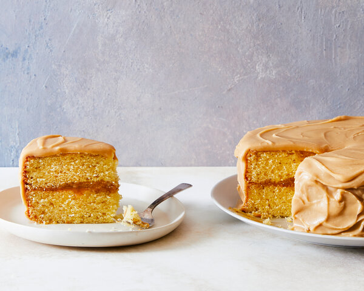

Southern Caramel Cake

Description
This traditional Southern caramel cake is perfect for when you want layer cake, and you'd like it fast.
It's light and fluffy under the sweet caramel glaze, which hardens at room temperature and shatters gently with every bite.
The glaze comes together quickly, thanks to the dark brown sugar, which already has that deep caramel flavor you'd get from cooking
down granulated sugar. A little heat, butter and buttermilk give the icing body. The final cake is like a soft drop biscuit under
a sweet caramel sauce, and it's just as good out of the refrigerator as it is warm.
Ingredients
For the cake:
- 225g unsalted butter, plus more for greasing the pan
- 375g self-rising flour, plus more for preparing the pan
- 400g granulated sugar
- 4 eggs
- 240ml buttermilk
- 2 tsp vanilla extract
For the icing:
- 225g unsalted butter
- 440g dark brown sugar
- 120ml buttermilk
- 1/2 tsp kosher salt
- 305g sifted confectioner's sugar
- 1 tsp vanilla extract
Steps
- Prepare the cake: Heat oven to 180 degrees Celsius. Grease and flour two (23cm) cake pans.
In a stand mixer fitted with the paddle attachment, cream the butter and sugar until light and fluffy,
about 4 minutes, scraping down the sides of the bowl halfway through.
- Add eggs, one at a time, and mix, scraping down the sides of the bowl after each addition.
Add about a third of the flour and mix on low speed until combined.
Add about half of the buttermilk and continue to mix until incorporated.
Scrape down the sides of the bowl. Continue to add flour and buttermilk in the same way,
beginning and ending with the flour.
- Add vanilla and combine fully, making sure not to overmix.
- Divide batter evenly between pans, and bake until a toothpick inserted in the center comes out clean,
25 to 30 minutes. Let cakes cool in the pans for 10 minutes before turning the cakes onto wire racks to cool completely.
- As the cake bakes, make the icing: Melt the butter in a medium saucepan over low heat.
Add the brown sugar and whisk to combine. Bring to a gentle boil over medium and let the mixture bubble for 5 minutes,
whisking constantly. Carefully and slowly add the buttermilk (it will bubble up), stirring contantly,
until the mixture comes to a full, rolling boil. Remove from heat and add salt.
Transfer mixture to the bowl of a stand mixer fitted with a whisk attachment.
- With the mixer on low speed, gradually add the sifted confectioners' sugar, mixing until smooth, then add vanilla extract
and mix to combine. The icing should look glossy and pour easily from the bowl.
- While the icing is still warm, spread about 1 cup icing on one cake, then top with the second cake.
Use the rest of the icing on the top and sides of the cake. The icing will set up as it cools.
If the icing starts to harden, microwave the icing in 10-second intervals until smooth.
(You can also make the icing up to 3 to 5 days in advance, and keep it in the refrigerator in an airtight container.)
Serve immediately.